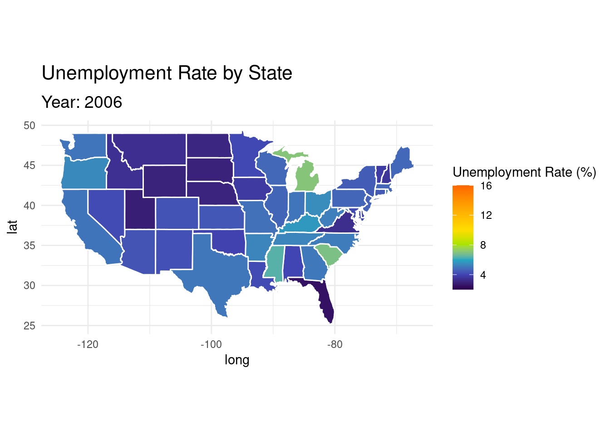
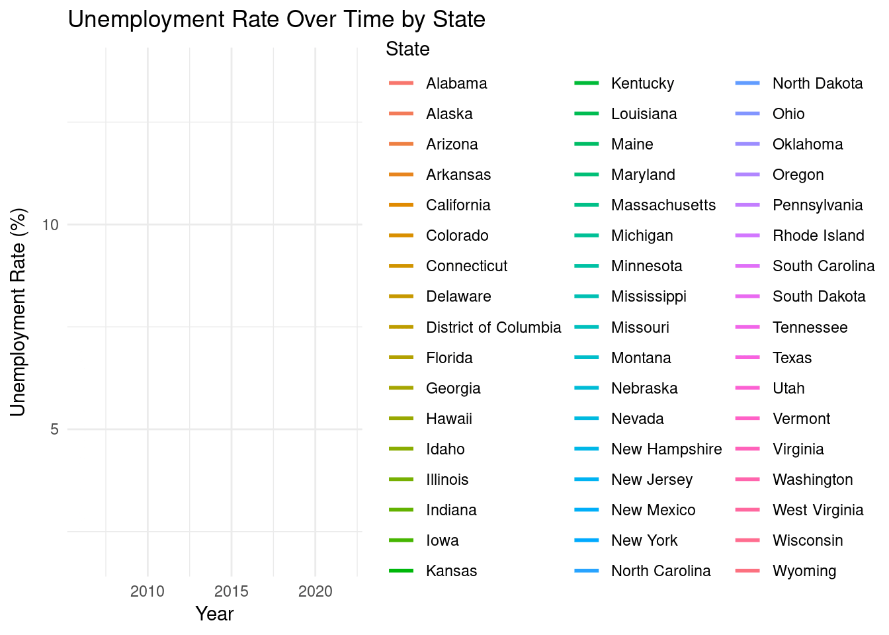
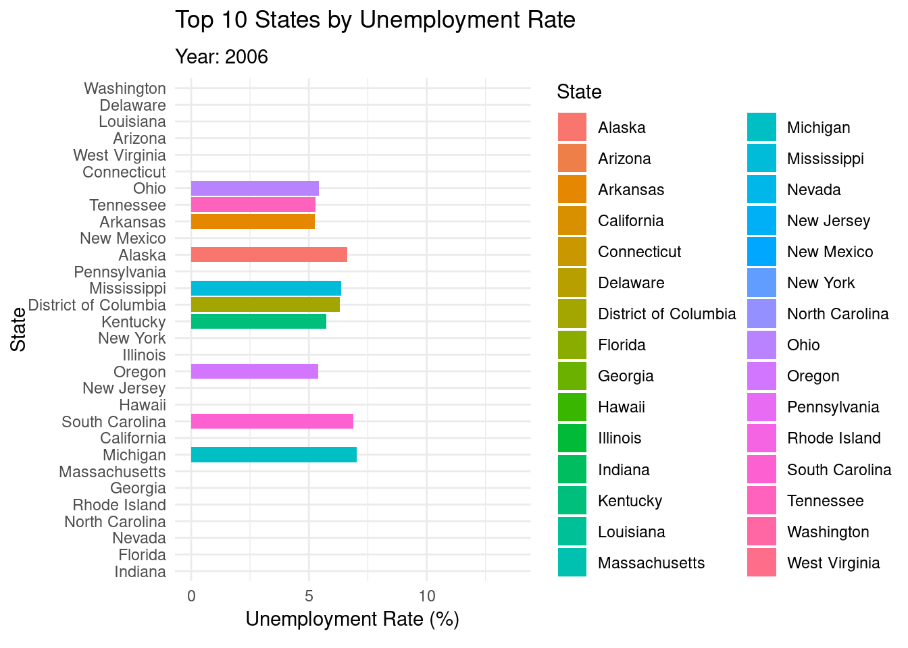
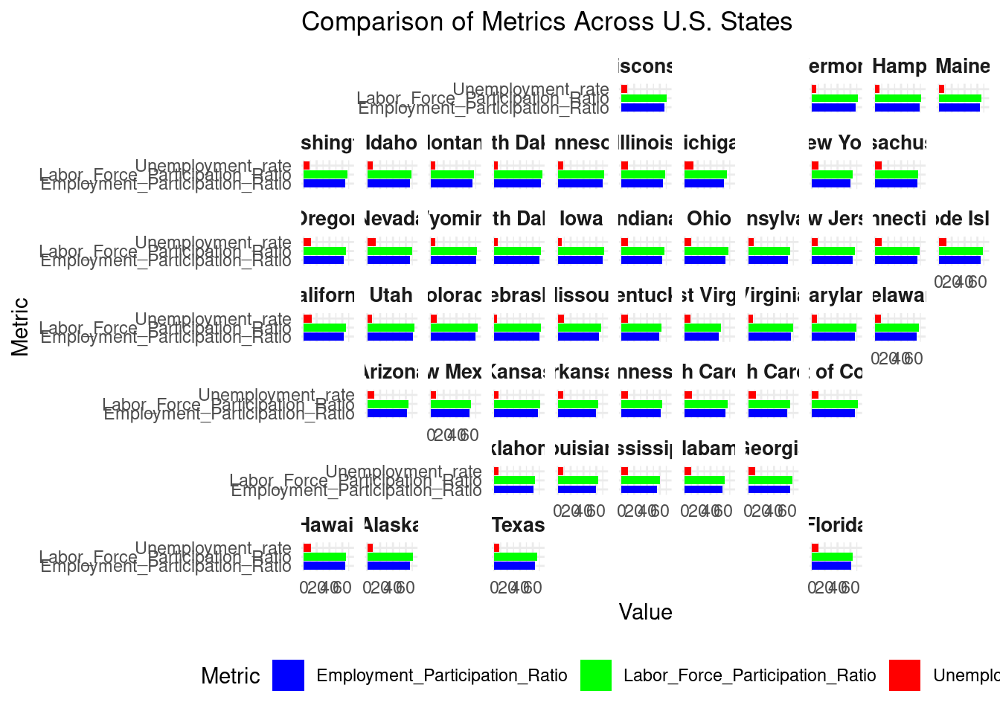

Comparing Unemployment Rates Across U.S. States During Economic Recessions
GEO511
Author
Swetha
Published
December 6, 2024
Introduction
This project analyzes unemployment rate fluctuations across U.S. states during two major economic downturns: the 2008 financial crisis and the COVID-19 pandemic. By leveraging spatial and temporal data, we map and compare unemployment rate changes before, during, and after these recessions. The insights from this analysis may highlight patterns in economic impact and recovery across states, informing potential strategies for future recession management.
Materials and Methods
Data Collection and Preparation
Leveraged datasets from the U.S. Bureau of Labor Statistics and supplementary geospatial sources. Utilized read.csv() and dplyr for comprehensive data cleaning, focusing on precise filtering and formatting of columns including State, Year, and Unemployment_rate.
Visualization and Analysis
Developed comprehensive visualization strategies using:
ggplot2: For generating detailed static maps.
gganimate: For creating temporal trend animations.
maps package: For foundational U.S. base map layers.
gifski: For high-quality animated graphic exports.
The methodology transforms complex unemployment data into clear, engaging visual narratives that reveal nuanced economic patterns across geographic and temporal dimensions.
Data Sources
U.S. Bureau of Labor Statistics (BLS): Monthly state-level unemployment data.
U.S. Census Bureau: State population estimates.
Data Cleaning and Preparation
The following code loads, cleans, and aggregates the data. ### Load libraries
data <-read.csv("data/States_Unemploment_Data.csv")
Data Cleaning Steps
The following code has the data cleaning code and getting the summary of the data.
Code
# 1. Drop duplicate rowsdata <- data %>%distinct()# 2. Remove rows with any missing valuesdata <- data %>%drop_na()# 3. Replace placeholder values ("NA", "unknown") with NAdata[data =="NA"] <-NAdata[data =="unknown"] <-NA# 4. Identify and clean inconsistent values (e.g., if certain columns should only contain specific ranges or categories)# Example: Ensure `Unemployment_rate` is within a realistic range (0 - 100)data <- data %>%filter(Unemployment_rate >=0& Unemployment_rate <=100)# Check for remaining missing values after cleaningsummary(data)
Aggregate data by State and Year to calculate the annual averages and displaying first ten rows.
Code
annual_data <- data %>%group_by(State, Year) %>%summarise(Labor_Force_Participation_Ratio =mean(Labor_Force_Participation_Ratio, na.rm =TRUE),Employment_Participation_Ratio =mean(Employment_Participation_Ratio, na.rm =TRUE),Labor_Force =mean(Labor_Force, na.rm =TRUE),Employment =mean(Employment, na.rm =TRUE),Unemployment =mean(Unemployment, na.rm =TRUE),Unemployment_rate =mean(Unemployment_rate, na.rm =TRUE),Latitude =first(Latitude),Longitude =first(Longitude) ) %>%ungroup()# Display the first few rows of the aggregated dataannual_data %>%head(10) %>%kable(caption ="Summary of Annual Data by State and Year",col.names =c("State", "Year", "Labor Force Participation Ratio", "Employment Participation Ratio","Labor Force", "Employment", "Unemployment", "Unemployment Rate", "Latitude", "Longitude"),align ="c" )
Summary of Annual Data by State and Year
State
Year
Labor Force Participation Ratio
Employment Participation Ratio
Labor Force
Employment
Unemployment
Unemployment Rate
Latitude
Longitude
Alabama
2006
61.60833
59.13333
2169933
2083033
86899.50
4.000000
32.31823
-86.9023
Alabama
2007
61.28333
58.81667
2180868
2092450
88418.08
4.041667
32.31823
-86.9023
Alabama
2008
60.61667
57.05000
2177201
2049357
127843.58
5.883333
32.31823
-86.9023
Alabama
2009
59.56667
53.56667
2157016
1939467
217549.33
10.083333
32.31823
-86.9023
Alabama
2010
59.50833
53.34167
2196694
1968757
227937.67
10.375000
32.31823
-86.9023
Alabama
2011
59.11667
53.45833
2201954
1991027
210927.92
9.583333
32.31823
-86.9023
Alabama
2012
58.16667
53.42500
2179075
2001118
177957.33
8.158333
32.31823
-86.9023
Alabama
2018
57.25833
55.00000
2239818
2151843
87974.50
3.941667
32.31823
-86.9023
Alabama
2019
57.69167
55.86667
2271412
2199088
72324.17
3.183333
32.31823
-86.9023
Alabama
2020
57.23333
53.58333
2263014
2118626
144388.67
6.408333
32.31823
-86.9023
Visualization Techniques
State-Level Map Visualization
Time-Series Trend Charts
Bar Chart Race
Results
Map Visualization
The following animated map shows the unemployment rate across states over time. The color scale represents unemployment rate levels.
Code
us_map <-map_data("state")annual_data$region <-tolower(annual_data$State)# Merge map data with your datasetmap_data <-inner_join(us_map, annual_data, by =c("region"="region"))# Animated Map Codeggplot(map_data, aes(long, lat, group = group, fill = Unemployment_rate)) +geom_polygon(color ="white") +scale_fill_gradientn(colors =c("#2D004B", "#4144B3", "#1EA8C1", "#A8E200", "#FFDD00", "#FF6600"),values = scales::rescale(c(2, 4, 6, 8, 10, 16)),name ="Unemployment Rate (%)",limits =c(2, 16)) +labs(title ="Unemployment Rate by State", subtitle ="Year: {frame_time}") +coord_fixed(1.3) +theme_minimal() +theme(plot.title =element_text(size =16, face ="bold"),plot.subtitle =element_text(size =14) ) +transition_time(Year) +ease_aes('linear')

Line Plot of Unemployment Trends
This line plot illustrates unemployment rate trends by state over time.
Code
ggplot(annual_data, aes(x = Year, y = Unemployment_rate, color = State, group = State)) +geom_line(size =1) +labs(title ="Unemployment Rate Over Time by State", x ="Year", y ="Unemployment Rate (%)") +theme_minimal() +transition_reveal(Year)

Interactive Line Plot to know about the Employment rates
Code
plot_ly(annual_data, x =~Year, y =~Unemployment_rate, color =~State, type ='scatter', mode ='lines') %>%layout(title ="Unemployment Rate Trends",xaxis =list(title ="Year"),yaxis =list(title ="Unemployment Rate (%)") )
Bar Chart Race of Top 10 States by Unemployment Rate
A bar chart race visualizes the top 10 states with the highest unemployment rate each year.
Code
top_states <- annual_data %>%group_by(Year) %>%top_n(10, Unemployment_rate) %>%arrange(Year, -Unemployment_rate)# Bar Chart Race Codeggplot(top_states, aes(x =reorder(State, -Unemployment_rate), y = Unemployment_rate, fill = State)) +geom_bar(stat ="identity") +coord_flip() +labs(title ="Top 10 States by Unemployment Rate",subtitle ="Year: {frame_time}",x ="State",y ="Unemployment Rate (%)" ) +theme_minimal() +transition_time(Year) +ease_aes('linear')

This visualization provides a comparative analysis of key labor market metrics—Unemployment Rate, Labor Force Participation Ratio, and Employment Participation Ratio—across U.S. states. By organizing states geographically using the geofacet package, this plot highlights the variation in these metrics in a spatially intuitive manner.
Code
geofacet_comparison_data <- annual_data %>%select(State, Year, Unemployment_rate, Labor_Force_Participation_Ratio, Employment_Participation_Ratio) %>%filter(!is.na(Unemployment_rate), !is.na(Labor_Force_Participation_Ratio),!is.na(Employment_Participation_Ratio)) %>%pivot_longer(cols =c(Unemployment_rate, Labor_Force_Participation_Ratio, Employment_Participation_Ratio),names_to ="Metric",values_to ="Value" )ggplot(geofacet_comparison_data, aes(y = Metric, x = Value, fill = Metric)) +geom_bar(stat ="identity", position ="dodge") +facet_geo(~ State, grid ="us_state_grid1") +scale_fill_manual(values =c("Unemployment_rate"="red","Labor_Force_Participation_Ratio"="green","Employment_Participation_Ratio"="blue" ),name ="Metric" ) +labs(title ="Comparison of Metrics Across U.S. States",x ="Value",y ="Metric",fill ="Metric" ) +theme_minimal() +theme(strip.text =element_text(size =10, face ="bold"),legend.position ="bottom" )

Conclusion
The graphical analysis of U.S. unemployment rates during the 2008 financial crisis and the COVID-19 pandemic highlights significant trends and disparities in economic resilience across states.
From the animated map visualization, we observe that states with diverse, service-based economies (such as California and New York) experienced sharp rises in unemployment during both crises. However, these states tended to recover faster due to a shift toward remote work and flexible job structures, especially during COVID-19.
States heavily reliant on specific sectors like tourism and manufacturing (e.g., Nevada and Michigan) faced prolonged high unemployment rates. This suggests that sector-specific economic dependencies can heighten vulnerability during global economic disruptions.
The line plot of unemployment trends over time reveals that while the 2008 financial crisis caused a relatively uniform spike in unemployment across states, the COVID-19 pandemic led to more varied impacts, with certain states being hit much harder than others. This difference may be attributed to varying public health restrictions, digital adaptability, and government support measures across states.
The bar chart race visualization, showing the top 10 states with the highest unemployment rates over time, highlights that certain states consistently appeared in the high-unemployment category across crises. This indicates persistent structural challenges that may require targeted policy interventions.
References
Li, J. (2013). Analysis of the High Unemployment Rate in the USA. World Review of Political Economy, 4(2), 218-229.
Athar, H. M., Chang, M. H., Hahn, R. A., Walker, E., & Yoon, P. (2013). Unemployment–United States, 2006 and 2010. MMWR: Morbidity & Mortality Weekly Report, 62.
Hagen, D., Lai, A. Y., & Goldmann, E. (2022). State-level unemployment and negative emotions throughout the Covid-19 pandemic in the United States. Preventive Medicine, 164, 107239.
Yilmazkuday, H. (2020). Unequal unemployment effects of COVID-19 and monetary policy across US States. Journal of Behavioral Economics for Policy, Forthcoming.